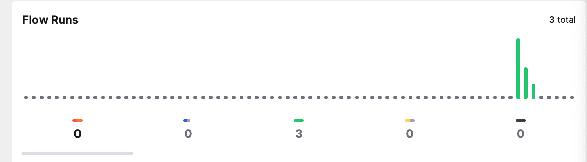

Integrating nnbench with Prefect¶
If you have more complex workflows it is sensible to use a workflow orchestration tool to manage them. Benchmarking with nnbench can be integrated with orchestrators. We will present an example integration with Prefect. We will explain the orchestration concepts in a high level and link to the corresponding parts of the Prefect docs. The full example code can be found in the nnbench repository.
In this example we want to orchestrate the training and benchmarking of a linear regression model.
Project Structure¶
Defining the training tasks and workflows¶
We recommend to separate the training and benchmarking logic.
from __future__ import annotations
import numpy as np
from prefect import flow, task
from sklearn import base
from sklearn.datasets import make_regression
from sklearn.linear_model import LinearRegression
from sklearn.model_selection import train_test_split
@task
def make_regression_data(
random_state: int, n_samples: int = 100, n_features: int = 1, noise: float = 0.2
) -> tuple[np.ndarray, np.ndarray]:
X, y = make_regression(
n_samples=n_samples, n_features=n_features, noise=noise, random_state=random_state
)
return X, y
@task
def make_train_test_split(
X: np.ndarray, y: np.ndarray, random_state: int, test_size: float = 0.2
) -> tuple[np.ndarray, np.ndarray, np.ndarray, np.ndarray]:
X_train, X_test, y_train, y_test = train_test_split(
X, y, test_size=test_size, random_state=random_state
)
return X_train, y_train, X_test, y_test
@task
def train_linear_regression(X: np.ndarray, y: np.ndarray) -> base.BaseEstimator:
model = LinearRegression()
model.fit(X, y)
return model
@flow
def prepare_regression_data(
random_state: int = 42, n_samples: int = 100, n_features: int = 1, noise: float = 0.2
) -> tuple[np.ndarray, ...]:
X, y = make_regression_data(
random_state=random_state, n_samples=n_samples, n_features=n_features, noise=noise
)
X_train, y_train, X_test, y_test = make_train_test_split(X=X, y=y, random_state=random_state)
return X_train, y_train, X_test, y_test
@flow
async def prepare_regressor_and_test_data(
data_params: dict[str, int | float] | None = None,
) -> tuple[base.BaseEstimator, np.ndarray, np.ndarray]:
if data_params is None:
data_params = {}
X_train, y_train, X_test, y_test = prepare_regression_data(**data_params)
model = train_linear_regression(X=X_train, y=y_train)
return model, X_test, y_test
The training.py file contains functions to generate synthetic data for our regression model, facilitate a train-test-split, and finally train the regression model.
We have applied Prefect's @task decorator.. which marks the contained logic as a discrete unit of work for Prefect.
Two other functions prepare the regression data and train the estimator.
They are labeled with the @flow decorator. that labels the function as a workflow that can depend on other flows or tasks.
The prepare_regressor_and_test_data function returns the model and test data so that we can use it in our benchmarks.
Defining Benchmarks¶
The benchmarks are in the benchmark.py file.
We have two functions to calculate the mean absolute error and the mean squared error.
These benchmarks are tagged to indicate they are metrics.
Another two benchmarks calculate calculate information about the model, namely the inference time and size of the model.
The last two functions serve to investigate the test dataset.
import pickle
import sys
import time
import numpy as np
from sklearn import base, metrics
import nnbench
@nnbench.benchmark(tags=("metric",))
def mae(model: base.BaseEstimator, X_test: np.ndarray, y_test: np.ndarray) -> float:
y_pred = model.predict(X_test)
return metrics.mean_absolute_error(y_true=y_test, y_pred=y_pred)
@nnbench.benchmark(tags=("metric",))
def mse(model: base.BaseEstimator, X_test: np.ndarray, y_test: np.ndarray) -> float:
y_pred = model.predict(X_test)
return metrics.mean_squared_error(y_true=y_test, y_pred=y_pred)
@nnbench.benchmark(name="Model size (bytes)", tags=("model-meta",))
def modelsize(model: base.BaseEstimator) -> int:
model_bytes = pickle.dumps(model)
return sys.getsizeof(model_bytes)
@nnbench.benchmark(name="Inference time (s)", tags=("model-meta",))
def inference_time(model: base.BaseEstimator, X: np.ndarray, n_iter: int = 100) -> float:
start = time.perf_counter()
for i in range(n_iter):
_ = model.predict(X)
end = time.perf_counter()
return (end - start) / n_iter
We did not apply any Prefect decorators here, as we will assign @tasks - Prefects smallest unit of work - to run a benchmark family.
Defining Benchmark runners.¶
In the runners.py file, we define the logic to run our benchmarks.
The runner collects the benchmarks from the specified file.
We can filter by tags and use this to define two separate tasks, one to run the metrics and the other to run the metadata benchmarks. We have applied the @task decorator to these functions.
@task
def run_metric_benchmarks(
model: base.BaseEstimator, X_test: np.ndarray, y_test: np.ndarray
) -> nnbench.types.BenchmarkRecord:
runner = nnbench.BenchmarkRunner()
results = runner.run(
os.path.join(dir_path, "benchmark.py"),
tags=("metric",),
params={"model": model, "X_test": X_test, "y_test": y_test},
)
return results
@task
def run_metadata_benchmarks(
model: base.BaseEstimator, X: np.ndarray
) -> nnbench.types.BenchmarkRecord:
runner = nnbench.BenchmarkRunner()
result = runner.run(
os.path.join(dir_path, "benchmark.py"),
tags=("model-meta",),
params={"model": model, "X": X},
)
return result
We have also defined a basic reporter that we will use to save the benchmark results with Prefect's artifact storage machinery.
class PrefectReporter(reporter.BenchmarkReporter):
def __init__(self):
self.logger = get_run_logger()
async def write(
self, record: types.BenchmarkRecord, key: str, description: str = "Benchmark and Context"
) -> None:
await create_table_artifact(
key=key,
table=record.compact(mode="flatten"),
description=description,
)
A final compound flow executes the model training, obtains the test set and supplies it to the benchmarks we defined earlier.
@flow(persist_result=True)
async def train_and_benchmark(
data_params: dict[str, int | float] | None = None,
) -> tuple[types.BenchmarkRecord, ...]:
if data_params is None:
data_params = {}
reporter = PrefectReporter()
regressor_and_test_data: tuple[
base.BaseEstimator, np.ndarray, np.ndarray
] = await training.prepare_regressor_and_test_data(data_params=data_params) # type: ignore
model = regressor_and_test_data[0]
X_test = regressor_and_test_data[1]
y_test = regressor_and_test_data[2]
metadata_results: types.BenchmarkRecord = run_metadata_benchmarks(model=model, X=X_test)
metadata_results.context.update(data_params)
metadata_results.context.update(context.PythonInfo())
await reporter.write(
record=metadata_results, key="model-attributes", description="Model Attributes"
)
metric_results: types.BenchmarkRecord = run_metric_benchmarks(
model=model, X_test=X_test, y_test=y_test
)
metric_results.context.update(data_params)
metric_results.context.update(context.PythonInfo())
await reporter.write(metric_results, key="model-performance", description="Model Performance")
return metadata_results, metric_results
The final lines in the runner.py serve the train_and_benchmark function to make it available to Prefect for execution.
Running Prefect¶
To run Prefect we have to do several things.
First, we have to make sure it is installed. You can use pip install -U prefect.
Then we have to run a Prefect server using prefect server start.
We make our benchmark flows available by executing it, python runner.py.
This enables us to now order an execution with the following command: prefect deployment run 'train-and-benchmark/benchmark-runner'.
The command should also be displayed in the output of the runner.py execution.
Now we can visit the local Prefect dashboard. By default it is on localhost:4200.
Here we see the executed tasks and workflows.

If we navigate to the "Flow Runs" tab we see more details of the flow runs.

In the "Deployments" tab you see all deployed flows.
Currently, there is only our train_and_benchmark flow under the benchmark-runner name.
We can trigger a custom execution of workflows in the menu behind the three dots.

You find the results of the benchmarks when visiting the "Artifacts" tab or by navigating to the "Artifacts" section of a specific flow execution.
As you can see, the nnbench is easily integrated with workflow orchestrators by simply registering the execution of a benchmark runner as a task in the orchestrator.
For more functionality of Prefect, you can check out their documentation.